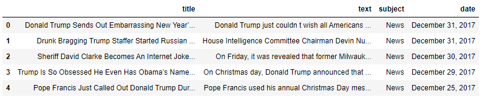
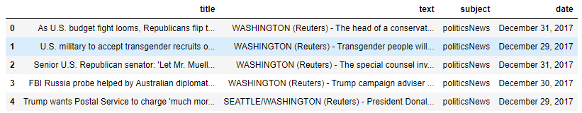
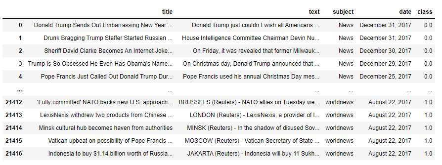
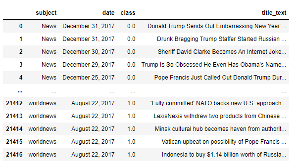
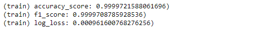
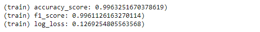
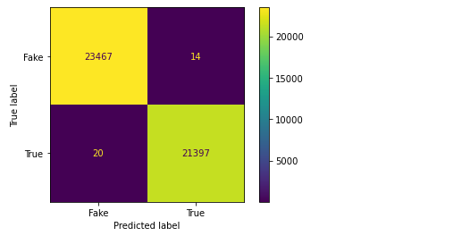
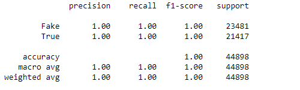
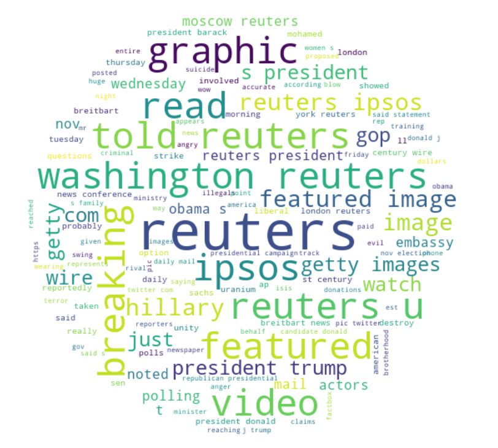

Import statements:
import numpy as np
import pandas as pd
from sklearn.feature_extraction.text import CountVectorizer
from nltk.tokenize import RegexpTokenizer
import plotly.graph_objects as go
from sklearn.model_selection import train_test_split
from sklearn.linear_model import LogisticRegression
from sklearn.metrics import accuracy_score, f1_score, log_loss
import seaborn as sns
import matplotlib.pyplot as plt
from sklearn.metrics import plot_confusion_matrix
from sklearn.metrics import classification_report
from wordcloud import WordCloud
Reading in the datasets:
fake_df = pd.read_csv('Fake.csv')
fake_df.dropna(inplace=True)
fake_df.head()

real_df = pd.read_csv('True.csv')
real_df.dropna(inplace=True)
real_df.head()

Concatenating the two datasets:
fake_df['class'] = np.zeros(fake_df.shape[0])
real_df['class'] = np.ones(real_df.shape[0])
news = pd.concat([fake_df, real_df])

Combine the title and text columns:
news['title_text'] = news['title'] + ' ' +news['text']
news.drop(['title', 'text'], axis=1, inplace=True)

Visualising the difference in fake and real news:
fig = go.Figure(data = [
go.Pie(labels=['Fake','True'], values = list(news['class'].value_counts()),
hole=0.3)
])
fig.update_layout(title='Fake and Real News Ratio')
fig.show()

CountVectorizer:
token = RegexpTokenizer(r'[a-zA-Z]+')
cv = CountVectorizer(lowercase=True,
stop_words='english',
ngram_range = (1,2),
tokenizer = token.tokenize,
max_features=5000)
text_counts = cv.fit_transform(news['title_text'])
text_counts
Train Test Split:
X = text_counts
y = news['class']
X_train, X_test, y_train, y_test = train_test_split(X, y, test_size=0.2, random_state=42)
Fitting the Logistic Regression Model:
model = LogisticRegression(class_weight='balanced', penalty='l2', solver='liblinear',
max_iter=1000)
model.fit(X_train, y_train)
Predicting the model on the training and testing sets:
y_pred = model.predict(X_train)
acc = accuracy_score(y_train, y_pred)
f1 = f1_score(y_train, y_pred)
l1 = log_loss(y_train, y_pred)
print(f'(train) accuracy_score: {acc})')
print(f'(train) f1_score: {f1})')
print(f'(train) log_loss: {l1})')

y_pred = model.predict(X_test)
acc = accuracy_score(y_test, y_pred)
f1 = f1_score(y_test, y_pred)
l1 = log_loss(y_test, y_pred)
print(f'(train) accuracy_score: {acc})')
print(f'(train) f1_score: {f1})')
print(f'(train) log_loss: {l1})')

Confusion Matrix:
disp = plot_confusion_matrix(model, X, y, display_labels=['Fake','True'], normalize=None)
plt.grid(False)
plt.show()

Classification Report:
y_pred = model.predict(X)
print(classification_report(y, y_pred, target_names=['Fake','True'], zero_division=0))

Generating a WordCloud:
top_features = {}
for col, coef in zip(cv.get_feature_names(), model.coef_[0]):
if np.abs(coef) > 0.3:
top_features[col] = int(np.abs(coef)*100)
x, y = np.ogrid[:300, :300]
mask = (x - 150) ** 2 + (y - 150) ** 2 > 130 ** 2
mask = 255 * mask.astype(int)
wc = WordCloud(background_color='white', repeat=True, mask=mask, scale=2)
wc.generate_from_frequencies(top_features)
plt.figure(figsize=(15,15))
plt.axis('off')
plt.imshow(wc, interpolation='bilinear')
plt.show()
